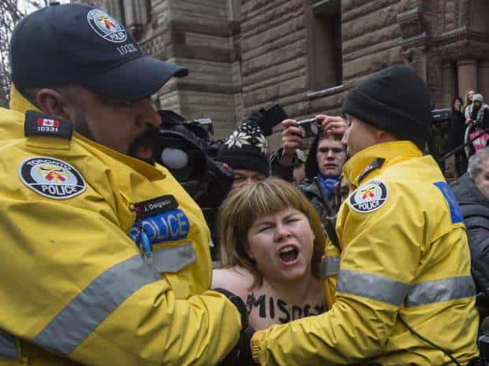
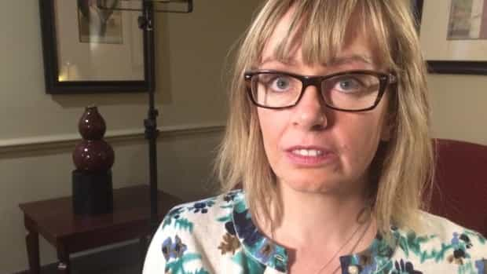
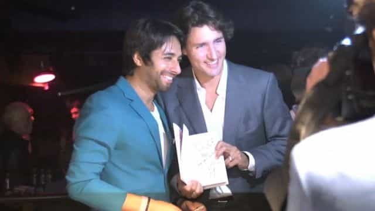

< < < Back
Feminists Go Crazy After Jian Ghomeshi Found Not Guilty Of Rape – Return Of Kings
Former Canadian Broadcasting Corporation (CBC) radio host Jian Ghomeshi has been sensationally acquitted of all five charges at the end of his first trial in Toronto. Four of the charges related to allegations of sexual assault and the fifth to an accusation of choking. The judge, William Horkins, found that Ghomeshi’s three accusers were “less than full and frank and forthcoming” in their statements to the media, various police officials, and within the court system.
Horkins additionally ruled that the crown’s case relied solely on the word of the witnesses. Consequently, The Guardian was one of the many liberal papers forced to concede, even indirectly, that there was zero hard evidence against Ghomeshi. The only other “evidence” remaining, accuser testimony, was found to be inconsistent and blatantly dishonest.
The impact on Ghomeshi’s life has been immense. He lost his lucrative job with CBC, having hosted the program Q, the highest-rated show of its kind in the broadcaster’s history. He has also paid more five figure legal bills than you or I have pairs of underwear and socks. In the meantime, both powerful and average Canadians and others around the world have repeatedly referred to him as a “rapist,” to the point where the defamers number in the hundreds of thousands or perhaps millions. His only “crime” so far has been his enjoyment of consensual BDSM activities.
Following the decision, social media erupted with rabid feminist insistences that Ghomeshi was “guilty.” Yet this was not before one topless chipmunk woman with a bull-ring (or giant booger) and words like “MISOGYNY” painted on her body tried to say in nude actions that due process constitutes hatred of women. Stupidly, she did so when the Crown, her “feminist ally” and the prosecutorial body that claimed Ghomeshi was guilty, was giving its post-court statement:

Although Ghomeshi is facing a second trial on three other counts of sexual assault involving three more women later in the year, the process and outcome of this first trial has been telling. As Judge Horkins reminded the court:
There is no other evidence to look to determine the truth. There is no tangible evidence. There is no DNA. There is no ‘smoking gun’.
What is more is that the claims that facilitated the charges for the first trial came from alleged events in 2002 and 2003. If the incidents supposedly occurred nearly fifteen years ago, police would never even investigate, let alone make charges over the vast majority of accusations involving purported physical assaults or burglaries. The reason for this is that there would be most often be no fair way of determining what happened, given the extended length of time. Nevertheless, no matter how little evidence accompanies them, sexual assault accusations are seen as an idyllic island separate from the rest of the judicial world. Jian Ghomeshi has learned this first hand.
Twitter will sit back and allow people to defame Ghomeshi and wish death upon him
There have been many gems today that show the “even-handedness” of Twitter’s new so-called anti-abuse policies. But before I show them, see how one “educated” feminist tried to claim that emphasizing an appropriate burden of proof, in a case where there was no evidence aside from contradictory accuser testimony, can be equated with “mansplaining” and the need to get rid of said burden of proof:
And here come some of the death wishes to be ignored by Jack Dorsey and Twitter:
https://twitter.com/worldprinxe/status/713036069084786688
https://twitter.com/ADiraimondo91/status/713022777758908417
Interestingly, the Ghomeshi story has intersected with an older story of mine. You may remember Gregory Alan Elliott, who endured a horror, long-term legal nightmare after being charged for arguing with feminists on Twitter. He was rightfully exonerated. Feeling sympathy for Ghomeshi and his ordeal, he tweeted that “[the] Canadian Justice System [is] based on FACTS, TRUTH, EVIDENCE, LAW,” only to be asked to “die” by a leftist:
Thank god Ghomeshi kept his emails

Washed-up actress Lucy DeCoutere, who hit the wall years ago, begged Ghomeshi for more time together AFTER the supposed assault. She sent him erotic pictures as well, including one of her simulating fellatio on a beer bottle. How is she a fit and proper person to remain as a captain in the Royal Canadian Air Force?
One of the now discredited accusers, Lucy DeCoutere, waived a publication ban, a right denied to men accused of sexual assault, who have much more to lose from the court process, namely their freedom. DeCoutere withheld key information from prosecutors, the media, and police, such as her extensive, erotic dealings with Ghomeshi, including via email, after the time she claimed he assaulted her. Ghomeshi’s retention of these emails they shared afterwards ended up saving him.
The email exchange demonstrates that the pair engaged in entirely consensual BDSM activities:
Jian getting to know you is literally changing my mind, in a good way I think… You kicked my ass last night, and that makes me want to fuck your brains out.
Moreover, DeCoutere promised to “beat the crap” out of Ghomeshi if he did not agree to see her again. It also took years for her to come forward and she spent much of the time post-public accusation courting the media, instead of giving a consistent account to the powers-that-be. The other accusers behaved similarly and this counted decisively against them, as it should, in the courtroom.
Beyond reasonable doubt is for other crimes, not sexual assault claims based on testimony alone

Ghomeshi’s former friendship with affirmative action-loving Justin Trudeau, the son of a gold-digging feminist, shows how far the star of a falsely accused man can fall.
I lose track of how many times I say this: no other crimes would be regularly investigated if alleged victims came forward 10-50 years after the purported event. Only sexual assault and male-on-female domestic violence are pursued so blindly, without any recourse to proper evidence and a satisfactory fulfilment of the beyond reasonable doubt standard. There are drawbacks to actively documenting contact between yourself and the women you have sex with, but it is fast becoming a necessity for men falsely accused of sexual assault and related crimes.
Jian Ghomeshi’s career is ruined, that much is true. Yet things could have become worse still for him if this first trial had delivered guilty verdicts. In no sense, too, can it be said that he will have a fair trial come this June. People are already calling him a rapist without substantiation and have been for nearly two years. The shrill cries of “Misogyny!” and “Rapist!” will only increase if a second judgment mid-year provides the only reasonable outcome: another set of acquittals.
Regardless of the fascistic SJW responses, the truth has spoken loud and clear in favor of Jian Ghomeshi today.
Read More: Was Jian Ghomeshi Fired From CBC For Baseless Allegations?